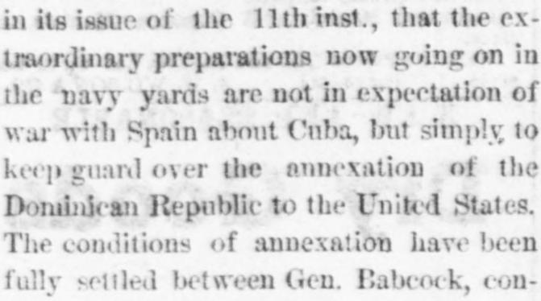
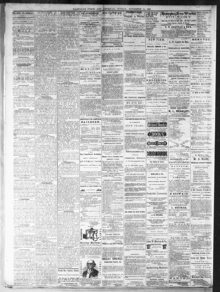

Traordinary preparations now going on in the 'navy yards arc notLos extraordinarios preparativos que ahora se realizan en los arsenales navales no son
Nashville Union and American. Nashville, Tenn., November 14, 1869. Page 2. View the originalVer el original


See the full pageVer la página completaAccording to the Nashville Union and American, extraordinary preparations in navy yards were reported to be for guarding the annexation of the Dominican Republic to the United States rather than for war with Spain over Cuba. The article stated that General Babcock, a confidential officer on Grant's staff, had settled the annexation conditions with San Domingo authorities, and the treaty—modeled after the Texas annexation—would be submitted to the Senate. Additionally, warships were sent to West Indies ports at President Baez's request to be present when the U.S. flag was hoisted, with opposition anticipated only from a revolutionary faction aided by Cabral.Según el Nashville Union and American, los extraordinarios aprestos en los astilleros navales respondían al propósito de asegurar la anexión de la República Dominicana a los Estados Unidos antes que a un conflicto armado con España a causa de Cuba. El artículo exponía que el general Babcock, edecán de confianza en el estado mayor de Grant, había acordado las cláusulas de anexión con las autoridades dominicanas, previéndose remitir al Senado el tratado —calcado del modelo de incorporación de Texas—. Se agregó asimismo que varios buques de guerra zarparon hacia las Antillas a requerimiento del presidente Báez para asistir al acto de izamiento del pabellón estadounidense, aguardándose resistencia tan solo de la facción rebelde auxiliada por Cabral.
FULL TEXT:TEXTO COMPLETO:
THE New York Sun has discovered something out of which to manufacture a sensation. That paper says, editorially, in its issue of the 11th inst., that the extraordinary preparations now going on in the navy yards are not in expectation of war with Spain about Cuba, but simply to keep guard over the annexation of the Dominican Republic to the United States. The conditions of annexation have been fully settled between Gen. Babcock, confidential officer of Grant's staff, and the authorities of San Domingo. The treaty is similar to that for the annexation of Texas, and will be laid before the Senate when Congress opens. All members of the Dominican government and leading men among the people are anxious for annexation, and the approval of the Senate is confidently expected. The ships of war now going to the West Indies are sent at the request of President Baez and his advisers, so that there may be one or more in each port when the United States flag is hoisted. No trouble is expected from the people generally, and the only opposition would be from a revolutionary faction aided by Cabral. This may be something more than a mere sensation.El New York Sun ha descubierto algo con lo cual fabricar una sensación. Ese periódico dice, editorialmente, en su edición del 11 del corriente, que los extraordinarios preparativos que ahora se llevan a cabo en los arsenales navales no son en expectativa de guerra con España acerca de Cuba, sino simplemente para montar guardia sobre la anexión de la República Dominicana a los Estados Unidos. Las condiciones de la anexión han sido plenamente acordadas entre el general Babcock, oficial confidencial del estado mayor de Grant, y las autoridades de Santo Domingo. El tratado es similar al de la anexión de Texas, y será presentado ante el Senado cuando se abra el Congreso. Todos los miembros del gobierno dominicano y los hombres principales del pueblo están ansiosos por la anexión, y la aprobación del Senado se espera confiadamente. Los buques de guerra que ahora van a las Indias Occidentales son enviados a solicitud del presidente Báez y sus consejeros, para que haya uno o más en cada puerto cuando se enarbole la bandera de los Estados Unidos. No se espera problema alguno del pueblo en general, y la única oposición sería de una facción revolucionaria ayudada por Cabral. Esto puede ser algo más que una mera sensación.